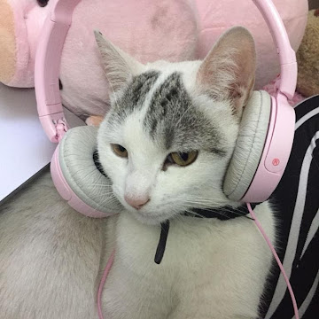

@gatochente¡Hola! Soy Vicente Reyes Castillo, un estudiante escolar apasionado por la tecnología, programación y la creatividad. Para mí, el mundo de la tecnología es fascinante en todas sus formas: desde desarrollo web hasta proyectos con hardware. Cada día busco aprender algo nuevo y llevar mis ideas al siguiente nivel.
Me especializo en crear experiencias digitales únicas y funcionales, y también en desarrollar proyectos innovadores con Arduino y Raspberry Pi. Creo que la combinación entre escribir código bien estructurado y crear interfaces intuitivas es fundamental para que un proyecto sea exitoso.
No me enfoco en una sola área. Me fascinan:
Cada proyecto es una oportunidad de crecer y experimentar. Creo que la tecnología tiene el poder de resolver problemas reales y mejorar la vida de las personas.